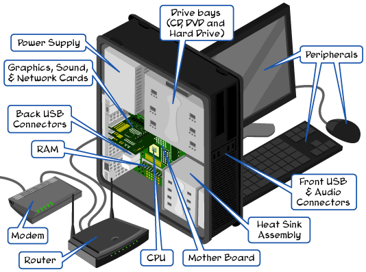
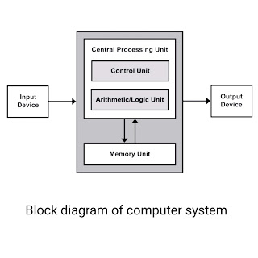

Components of Computer

Lets read about Components of computer in short...
I/O Devices
An input is data that a computer receives. An output is data that a computer sends.An input device sends information to a computer system for processing, and an output device reproduces or displays the results of that processing. Input devices only allow for input of data to a computer and output devices only receive the output of data from another device. Most devices are only input devices or output devices, as they can only accept data input from a user or output data generated by a computer. However, some devices can accept input and display output, and they are referred to as I/O devices (input/output devices). For example, a keyboard sends electrical signals, which are received as input. Those signals are then interpreted by the computer and displayed, or output, on the monitor as text or images. The computer sends, or outputs, data to a printer. Then, that data is printed onto a piece of paper, which is also considered output.To know more click here


Arithmetic Logical Unit (ALU)
An arithmetic-logic unit (ALU) is the part of a computer processor (CPU) that carries out arithmetic and logic operations on the operands in computer instruction words. In some processors, the ALU is divided into two units, an arithmetic unit (AU) and a logic unit (LU). Typically, the ALU has direct input and output access to the processor controller, main memory (random access memory or RAM in a personal computer), and input/output devices. Inputs and outputs flow along an electronic path that is called a bus. The input consists of an instruction word (sometimes called a machine instruction word) that contains an operation code (sometimes called an "op code"), one or more operands, and sometimes a format code. The operation code tells the ALU what operation to perform and the operands are used in the operation. (For example, two operands might be added together or compared logically.) The format may be combined with the op code and tells, for example, whether this is a fixed-point or a floating-point instruction. The output consists of a result that is placed in a storage register and settings that indicate whether the operation was performed successfully. (If it isn't, some sort of status will be stored in a permanent place that is sometimes called the machine status word.) In general, the ALU includes storage places for input operands, operands that are being added, the accumulated result (stored in an accumulator), and shifted results. The flow of bits and the operations performed on them in the subunits of the ALU is controlled by gated circuits. The gates in these circuits are controlled by a sequence logic unit that uses a particular algorithm or sequence for each operation code. In the arithmetic unit, multiplication and division are done by a series of adding or subtracting and shifting operations. There are several ways to represent negative numbers. In the logic unit, one of 16 possible logic operations can be performed - such as comparing two operands and identifying where bits don't match. The design of the ALU is obviously a critical part of the processor and new approaches to speeding up instruction handling are continually being developed.
CONTROL UNIT
The control unit (CU) is a component of a computer's central processing unit (CPU) that directs the operation of the processor. It tells the computer's memory, arithmetic and logic unit and input and output devices how to respond to the instructions that have been sent to the processor. A control unit works by receiving input information that it converts into control signals, which are then sent to the central processor. The computer's processor then tells the attached hardware what operations to carry out. The functions that a control unit performs are dependent on the type of CPU, due to the variance of architecture between different manufacturers. The following diagram illustrates how instructions from a program are processed.